@CBSNews
📝 原文: Who is Andy Burnham, the man replacing British Prime Minister Keir Starmer after his resignation?
🇨🇳 译文: 在凯尔·斯塔默辞职后接替英国首相的安迪·伯纳姆是谁？

🕒 2026-07-17T15:15:01+00:00
| 来源 | 旧窗口内数量 | 本次新增 | 本次淘汰 | 当前窗口内共有 |
|---|---|---|---|---|
| 推文 + Dawn 新闻 | 0 | 53 | 0 | 53 |
| ARY News | 0 | 0 | 0 | 0 |
注：淘汰数 = 旧窗口内数量 + 本次新增 - 当前窗口内共有


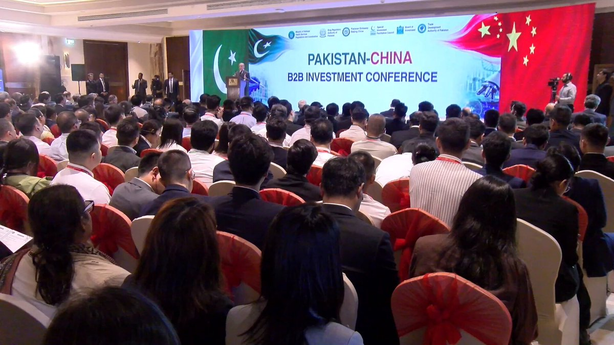

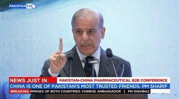
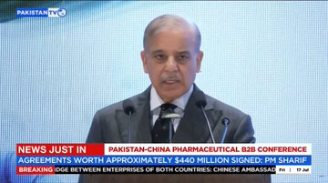
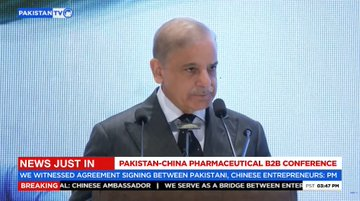
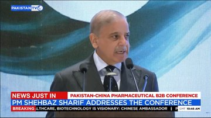
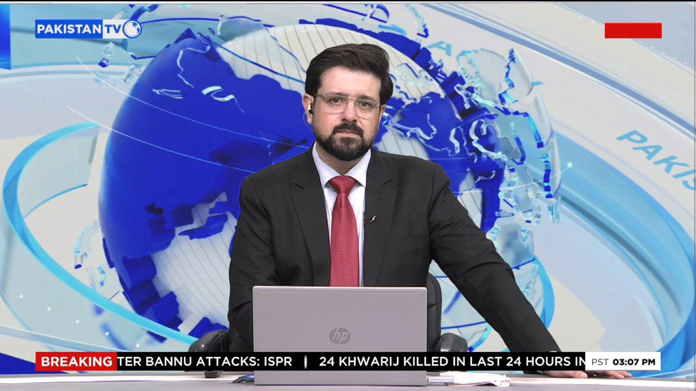
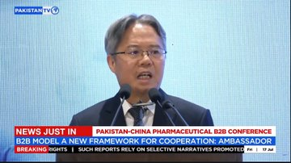
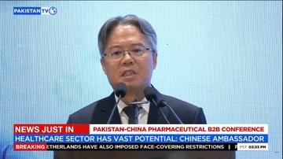
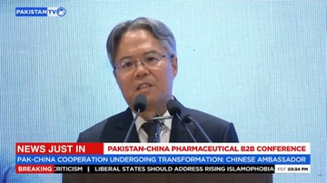
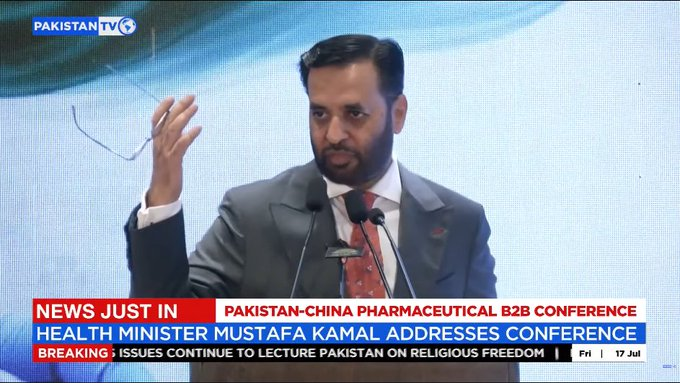
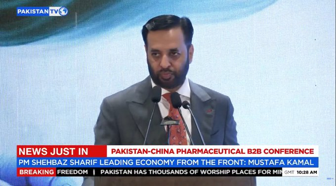


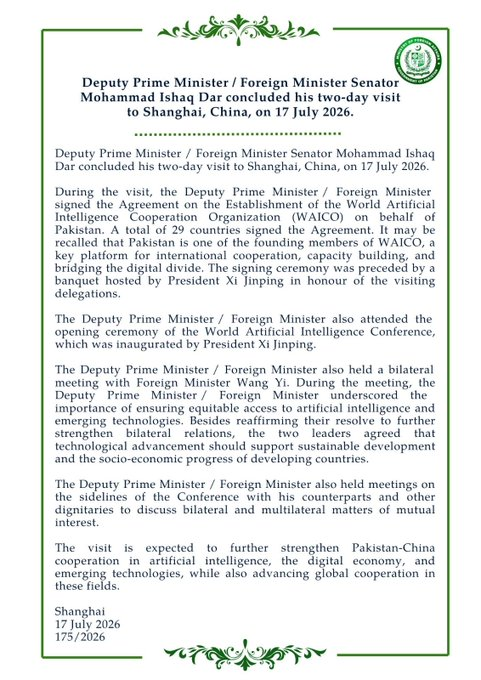


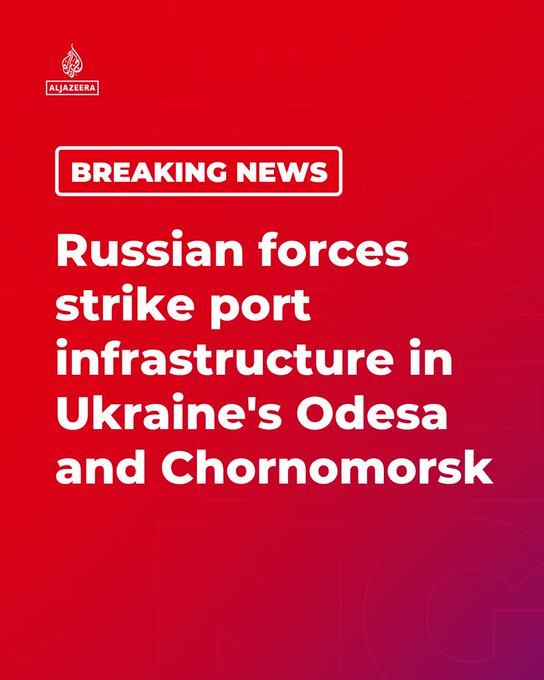


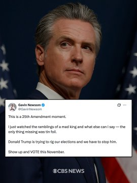
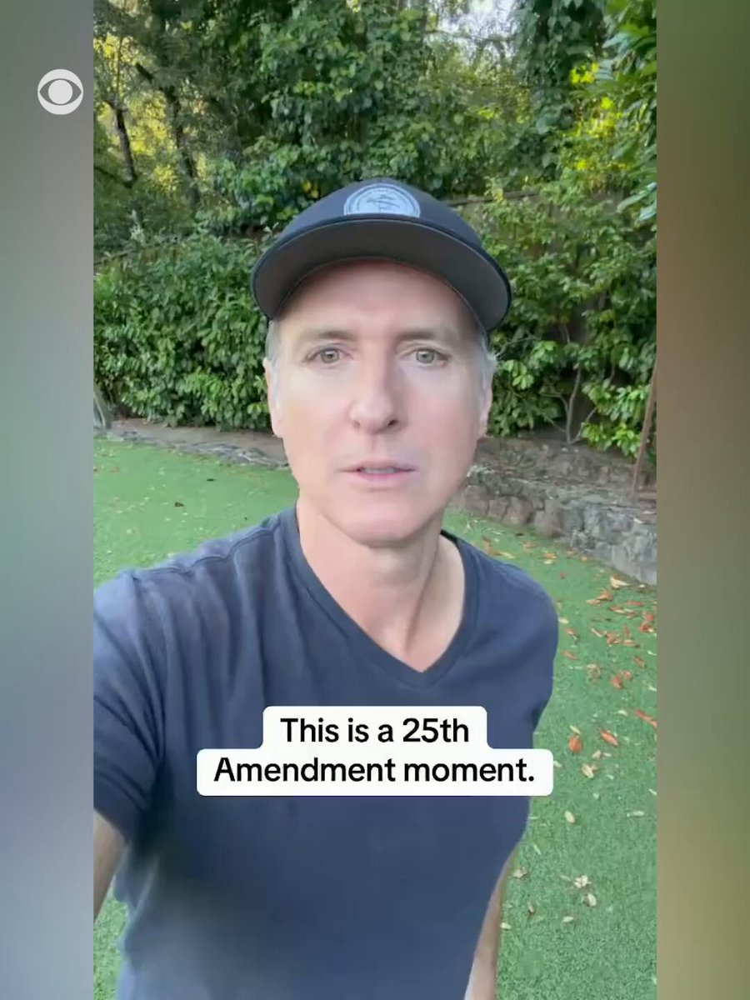
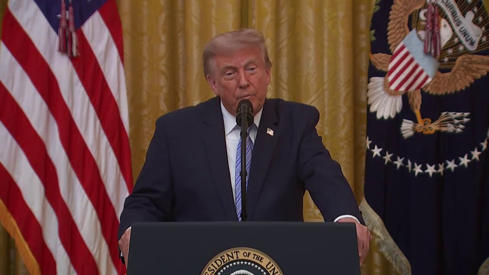
暂无文章。